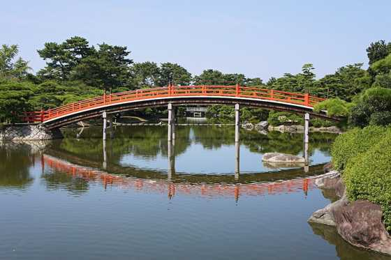
おうちごはん花紋
黒と木の和の佇まいに、近所の台所のような一食を。券を一枚買えば、朝も昼もおうちごはんがはじまります。
お店について
「おうちごはん花紋」は、香川県坂出市京町、元町商店街から東へのびる本街道沿いにあるお店です。JR坂出駅からも近く、黒を基調にした重厚感のある和の趣の建物が目印とされています。
2024年9月1日にオープンし、モーニングとランチのイートイン、お弁当・惣菜のテイクアウトに対応しています。入口の食券機で券を買い、受け渡し口で受け取る仕組みで、店内には木のテーブルと椅子が並び、明るい雰囲気と紹介されています。駐車場もあります。
店名「花紋」の意味や、お店に込めた想いは確認できていません。花の紋様のようにひとつひとつ丁寧に、というのは制作側のイメージです。
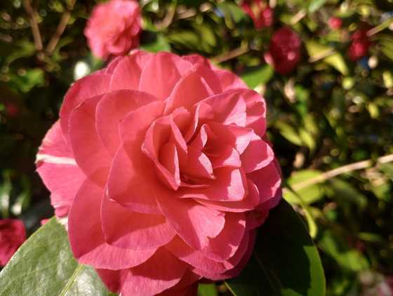
メニュー
朝・昼・持ち帰りの3つの場面でご利用いただけるお店です。営業時間・定休日・価格・内容の詳細は準備中です。

モーニング
サラダ、トースト、コーヒーなど(ご紹介の例)
詳細は準備中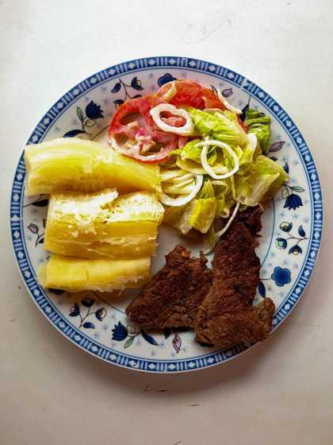
ランチ
日替わりのイートイン
詳細は準備中
お弁当・惣菜
テイクアウトに対応
詳細は準備中
ソフトクリーム・カレーなど
紹介のあった人気の品
提供状況は準備中写真はすべてフリー素材のイメージで、店舗の実際の料理・様子ではありません。
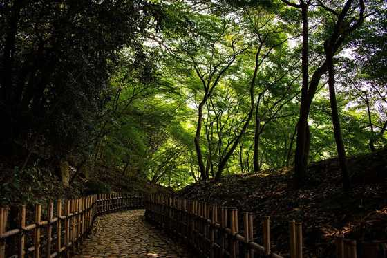
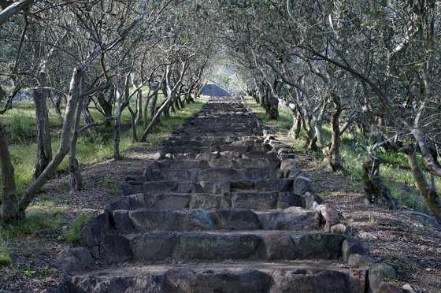
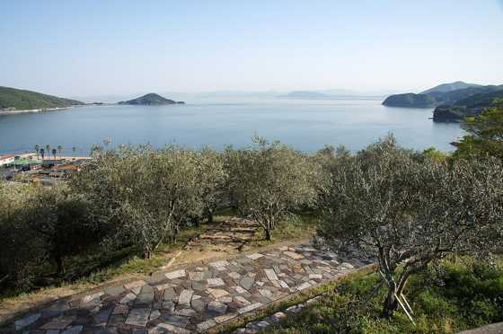
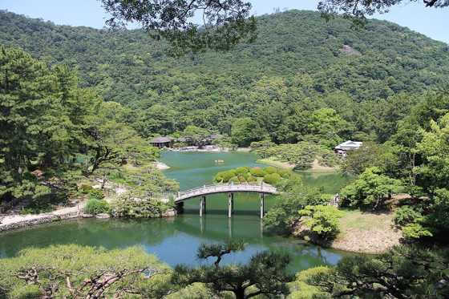
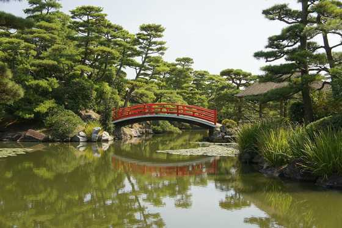
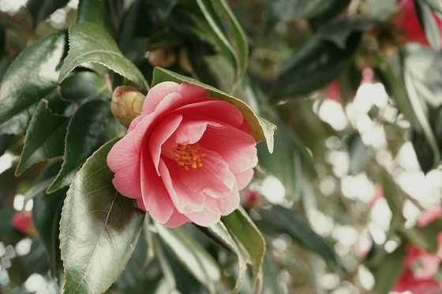
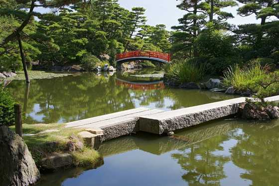
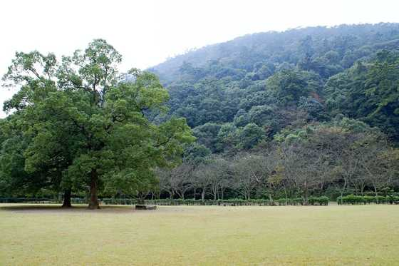

口コミ
以下はイメージ例です。実在のお客様の声ではありません。
朝、券を買ってすぐに出てくるのがありがたい。木のテーブルで落ち着いて食べられました。
お昼のお弁当を持ち帰りました。家で食べても、ほっとする味でした。
駅から近くて寄りやすい。食後のソフトクリームが楽しみになりました。
アクセス
- 住所
- 〒762-0001 香川県坂出市京町2丁目3-22
- 電話
- 準備中
- 営業時間
- 準備中
- 定休日
- 準備中
- @kamon151115
本ページは営業用の試作サンプルです。掲載の写真はフリー素材のイメージで、店舗の実際の様子ではありません。
写真クレジット
- p01 663highland「Nakatsu-bansho-en」CC BY 2.5(creativecommons.org)/ 出典(縮小等の加工あり)
- p02 663highland「Setonaikai Kagawa」CC BY 2.5(creativecommons.org)/ 出典
- p03 Azagal258「Un chemin du Ritsurin-kōen」CC BY-SA 4.0(creativecommons.org)/ 出典
- p04 Nathanieljoyce「Pink Camellia Flower」CC BY-SA 4.0(creativecommons.org)/ 出典
- p05 663highland「Shodoshima Olive Park」CC BY 2.5(creativecommons.org)/ 出典
- p06 663highland「Shodoshima Olive Park」CC BY 2.5(creativecommons.org)/ 出典
- p07 Suicasmo「Ritsurin Garden」CC BY-SA 4.0(creativecommons.org)/ 出典
- p08 663highland「Nakatsu-bansho-en」CC BY 2.5(creativecommons.org)/ 出典
- p09 663highland「Shodoshima Olive Park」CC BY 2.5(creativecommons.org)/ 出典
- p10 些細な日常「Camellia-japonica」CC BY-SA 4.0(creativecommons.org)/ 出典
- p11 663highland「Nakatsu-bansho-en」CC BY 2.5(creativecommons.org)/ 出典
- p12 663highland「Ritsurin park」CC BY 2.5(creativecommons.org)/ 出典
- f01 Daderot「Toasted oatmeal bread with butter and apple butter」CC0(creativecommons.org)/ 出典
- f02 Muago「Almuerzo criollo」CC0(creativecommons.org)/ 出典
- f03 Chandapiwa Malema「Oatmeal with a cherry compote」CC0(creativecommons.org)/ 出典
- f04 Yerson Retamel「Fresh Carrots」CC0(creativecommons.org)/ 出典
- f05 Alisa Anton「Hot chocolate (Unsplash)」CC0(creativecommons.org)/ 出典